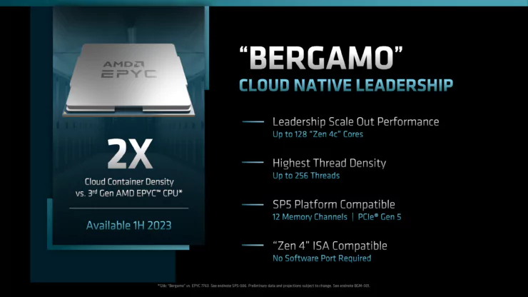
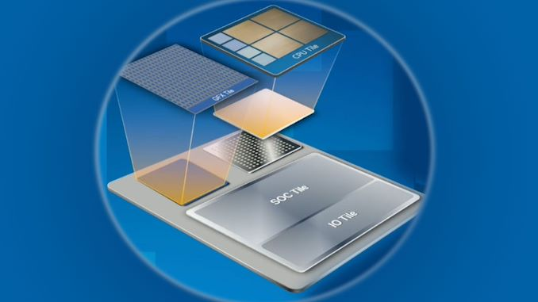
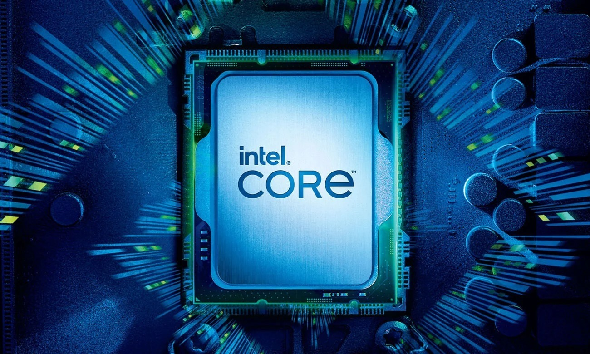

AMD
Zen 4c
Będzie to nowa architektura procesorów, która podobna jest do rdzeni efficient od Intela. Od rdzeni Zen 4 różni je mniejsza ilośc pamięci cache oraz zwiększenie gęstosci rdzenie z 8 na chiplet do aż 16. Jednakże będą one najprawdopodobniej wykozystywne tylko w procesorach serwerowych przeznaczonych do chmury. Ilośc rdzeni na całym CPU będzie zwiększona aż do 128.
Zen 5
Będzie to nowa architektura procesorów od AMD. Z wycieków podobno jest ona całkowitą przebudową procesora i IPC zwiększy się o 20 - 26%. Ma ona wyjść w I połowie 2024 roku.

Intel
MTL-S
Będzie to najnowsza, 14 generacja procesorów Intela, jednakże z powodu problemów nowej architektury "tiles" będzie ona dostępna tylko w konfiguracji 6+8 (6-performance, 8-efficient). Oznacza to, że będzie ona dostępna tylko w procesorach serii 5 i 3. Z powodu jednoczesnego wypuszczenia z RTL-R, prawdopodebnie będą one nazywane zamiast i5 to 5 ultra. Zostaną one wypuszczone na chipsetcie 800 ze wspraciem DDR5 (tylko).
RPL-R
Będzie to zastępcza generacja również nazywana 14, ale będzie ona odświeżoną 13 generacją. Postaje ona z powodu ww. problemów z MTL-S i ma za zadanie stworzenie całego SKU od i3 po i9.
